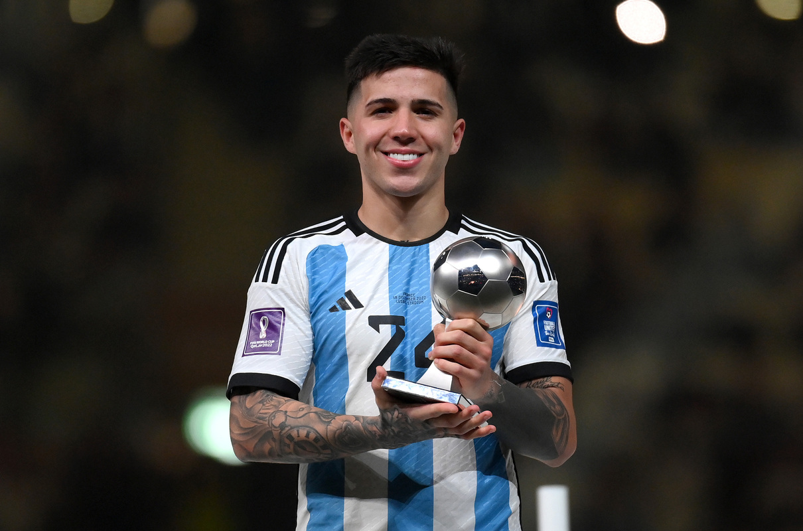
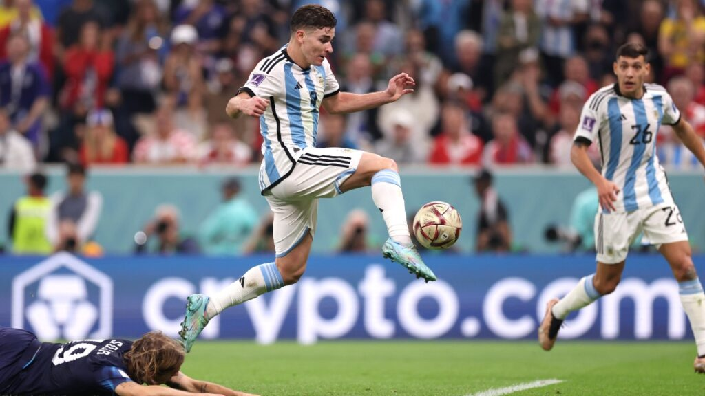
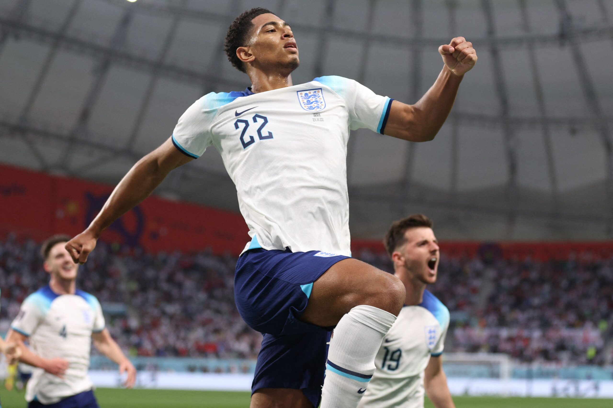
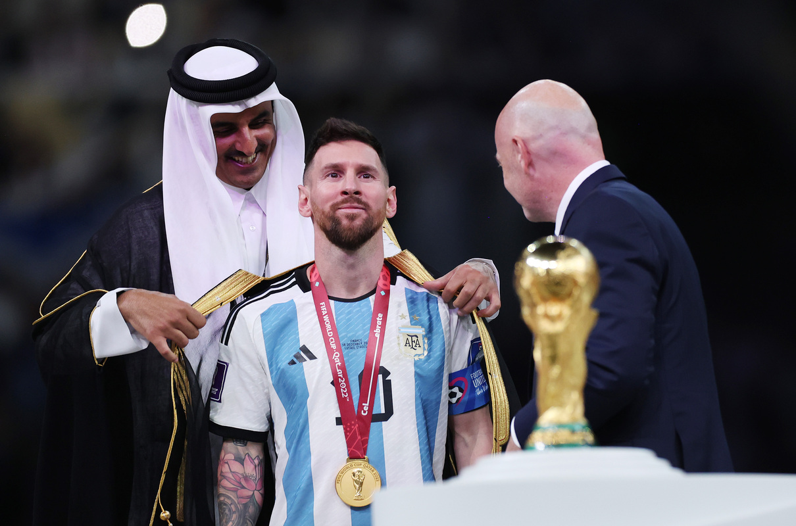
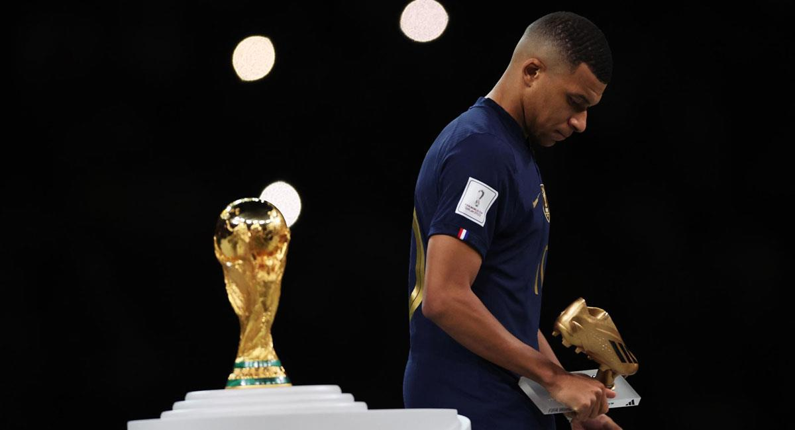

Jugadores Jóvenes en el Mundial 2022
El mundial de la Copa Mundial de la FIFA 2022 fue una gran oportunidad para que jóvenes futbolistas demostraran su talento en el escenario más importante del fútbol mundial. A pesar de su corta edad, muchos de ellos lograron destacar por su habilidad, madurez y capacidad para jugar bajo presión en partidos de alto nivel.
Uno de los casos más destacados fue el de Enzo Fernández, quien tuvo un rendimiento sobresaliente con la selección de Argentina. Su desempeño en el mediocampo fue clave para el funcionamiento del equipo, destacándose por su visión de juego, precisión en los pases y capacidad defensiva. Gracias a su gran actuación, fue reconocido como el mejor jugador joven del torneo.

Otro joven que brilló fue Julián Álvarez, quien tuvo un papel importante en la delantera de Argentina, anotando goles importantes en momentos clave del torneo. Su velocidad, movilidad y capacidad para definir lo convirtieron en una pieza fundamental en el ataque del equipo campeón.

Además, otros jóvenes como Jude Bellingham también destacaron con sus selecciones, demostrando que el futuro del fútbol está en buenas manos. Estos jugadores no solo aportaron energía y talento, sino que también demostraron que la edad no es un límite para competir al más alto nivel. Su participación en este mundial marcó el inicio de carreras que prometen seguir brillando en los próximos años.

Jugadores Destacados en el Mundial 2022
El Mundial de la Copa Mundial de la FIFA 2022 contó con la participación de grandes estrellas del fútbol que dejaron huella por su rendimiento y liderazgo dentro del campo. Estos jugadores fueron clave para el éxito de sus selecciones y protagonizaron algunos de los momentos más memorables del torneo.
El jugador más destacado fue sin duda Lionel Messi, quien lideró a Argentina hacia el título mundial. Messi anotó goles importantes, brindó asistencias y fue determinante en cada partido. Su desempeño le permitió ganar el Balón de Oro como el mejor jugador del torneo, consolidando su legado en la historia del fútbol.

Otro jugador que brilló fue Kylian Mbappé, quien tuvo una actuación espectacular con Francia. Fue el máximo goleador del torneo y anotó tres goles en la final, algo muy poco común. Su velocidad, técnica y capacidad de definición lo convirtieron en uno de los jugadores más peligrosos del campeonato.

También destacaron otros futbolistas como Luka Modric, quien volvió a liderar a su selección con gran experiencia, y Neymar Jr, quien mostró su talento a pesar de las dificultades. En general, estos jugadores demostraron por qué son considerados algunos de los mejores del mundo, dejando momentos inolvidables en el Mundial.